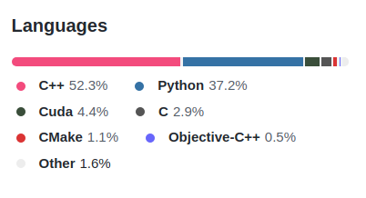

Review, IDEA, & Preparing for Deep Learning
Contents
34. Review, IDEA, & Preparing for Deep Learning#
34.1. Review for Level 1#
Remember that to earn a C or better (or for you level 2 achievements to influence) your grade at all you have to earn all of the level 1s.
Review the Achievement Definitions to be sure you know what we are looking for.
34.2. Representation#
We change the representation of data when it is not tabular. As we’ve seen with text and images, we have to transform the data into a tabular form for the algorithms we have seen so far. Deep learning combines learning a representation with learning a prediciton rule.
34.3. Matching Tools to Steps in the ML Pipeline#
pandas |
loading data, cleaning data, summarizing |
seaborn |
visualization |
BeautifulSoup |
webscraping |
sklearn |
fitting models, evaluating models, tranforming data for modeling |
34.4. Deep Learning Ecosystem#
While sklearn can do basic neural networks, it doesn’t have many types of neurons or fancy layers.
What makes deep learning work is its ability to transform data in new ways. We will see them in more det
Two popular Deep Learning Libraries are Pytorch (code) and TensorFlow (code), both are open source These are both complex, high performance libraries with optimized code. We have used python in class because it is a user-friendly programming language, but it is not optimal, performance-wise, so much of the code in these libraries is in C++.

Keras is a high level library written on top of tensorflow
in python. The goal of this library is to enable fast experimentation. You can
think of the relationship between tensorflow and keras like the relationship
between matplotlib and seaborn.
In seaborn we got high level plot figures with high level parameters like using variables
in our dataset to create rows and columns of subplots. In matplotlib, we would
have to separately create the subplot grid, then break the data apart, and
assign a plot using a subset of the data for each subplot. However, under the
hood, seaborn uses matplotlib. Just as we have mostly used seaborn, but occasionally use matplotlib to tweak things, we will use keras.
Deep learning is computationally expensive, which is why the code is so optimized. However this means installing deep learning libraries is harder. They require more dependencies than we have worked with to date. Also, the code is optimized in order to work on high performance hardware: GPUs and other parallel computing systems, which most laptops do not have. We will use google Colab to do deep learning in class.
Warning
There is a whole semester long course on just Deep Learning (CSC541). We will
not cover everything; the goal is just enough that you know where to start.
If you want to use deep learning after this class alone, you’ll need to study
substantially on your own, but past students have taken this foundation and made
it work.
34.5. IDEA#
The IDEA feedback is important feedback for helping Faculty, Departments, and URI at large monitor how we are doing at teaching. Filling out this feedback is important, even though it does not impact your time in this class. You fill it out to help future students in this class and help instructors improve our overall teaching, and you could see any of us again.
Important
If the class gets to 70% response rate, you’ll all be allowed to reply to portfolio 4 feedback and change earn achievements you were close on but didn’t quite get. (whatever number is appropriate; sitll a deadline on 12/22, so you’ll get ~24 hours to reply & change your grade )
34.6. More Practice#
Important
these questions will help you be prepared for questions to earn the last few achievments in class time.
What questions would you like to ask a Data scientist about how they do their work? Brin questions to the last two classes for our speakers (see bios from Prismia on 12/3).
How do different machine learning tasks (classification, regression, clustering) compare?
How do different models within a task compare?
What can your model’s performance tell you?
Pick an ML applicaiton and think about what data, and tools you would need to use in order to replicate the system.
Review the import cells in different classes and be sure you know why we import each package, module, class, and function
What does each part of the output of a
GridSearchCVexperiment tell you?